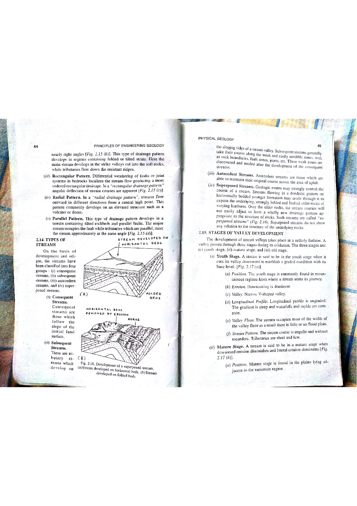

Q141: Flow Net Seepage Calculation: Hydraulic Conductivity, Head Loss, and Geometric Shape Factor
In hydrogeology, groundwater hydraulics, and dam geotechnical engineering, a Flow Net is a curvilinear orthogonal grid formed by the intersection of two families of mutually perpendicular curves: Flow Lines (Streamlines) and Equipotential Lines (Todd & Mays, 2005; Freeze & Cherry, 1979; Bangar, p. 28).
The flow net represents a graphical or numerical solution to the 2-dimensional Laplace Equation for steady-state groundwater flow in a homogeneous, isotropic porous medium:

Derivation of the Total Flow Net Discharge Equation
Consider an elemental "curvilinear square" within the flow net bounded by two adjacent flow lines spaced by average width $b$, and two adjacent equipotential lines spaced by average length $l$ along the flow path:
- According to Darcy's Law, the seepage flow $\Delta q$ passing through a single flow channel per unit width perpendicular to the section is: $$\Delta q = K \cdot A \cdot i = K \cdot (b \times 1) \cdot \left(\frac{\Delta h}{l}\right) = K \cdot \Delta h \cdot \left(\frac{b}{l}\right)$$
- By rigorous flow net construction rules, the grid is drawn as curvilinear squares, meaning the ratio of width to length is maintained constant everywhere ($b / l \approx 1.0$). Therefore: $$\Delta q = K \cdot \Delta h$$
- Let the total hydraulic head loss across the entire system be $H$ (or $\Delta H$), subdivided into $n_d$ equal potential drops. The head drop per field is: $$\Delta h = \frac{H}{n_d}$$
- Let the total number of flow channels in the net be $n_f$. Because all $n_f$ channels run in parallel, the total flow rate ($Q$) per unit width is the sum of discharge across all channels: $$\text{Total Seepage Discharge: } Q = n_f \cdot \Delta q = K \cdot H \cdot \left(\frac{n_f}{n_d}\right)$$

Steady-State Flow vs. Transient Storage Depletion
The central analytical distinction in groundwater mechanics separates steady-state flow from transient storage release:
- Flow Net Assumptions: Classical flow nets are drawn exclusively for steady-state seepage where the hydraulic head distribution ($\partial h / \partial t = 0$) and the shape of the phreatic surface or piezometric surface remain invariant over time. Water entering any elemental cell exactly equals water exiting ($\text{Inflow} = \text{Outflow}$). No water is added to or released from aquifer storage!
- Physical Nature of Specific Yield ($S_y$): Specific yield is defined as the volume of water released from storage per unit surface area of an unconfined aquifer per unit decline of the water table:
$$S_y = \frac{V_w \text{ (drained by gravity)}}{V_{\text{aquifer}} \text{ (total dewatered)}}$$Specific yield governs transient pumping drawdown tests (Theis / Neuman unsteady-state equations: $S \frac{\partial h}{\partial t} = T \nabla^2 h$), but has zero mathematical presence in the steady-state Laplace equation ($\nabla^2 h = 0$).
Therefore, parameter (iii) Specific Yield is entirely excluded from the computation of total flow net discharge, confirming that only (i), (ii), and (iv) are utilized.
In natural sedimentary aquifers, horizontal hydraulic conductivity ($K_x$) is typically much higher than vertical conductivity ($K_z$) ($K_x / K_z \approx 2 - 10$ due to horizontal bedding planes). The governing equation becomes:
To construct an orthogonal flow net in an anisotropic medium:
- Transform the horizontal coordinate axis using the scale contraction factor: $$x_t = x \sqrt{\frac{K_z}{K_x}}$$
- Draw a standard orthogonal flow net with curvilinear squares on the transformed section.
- Calculate total seepage using the equivalent effective hydraulic conductivity ($K'$): $$K' = \sqrt{K_x \cdot K_z}$$ $$Q = \sqrt{K_x \cdot K_z} \cdot H \cdot \left(\frac{n_f}{n_d}\right)$$
(i) Geometry of the flow nets
(ii) Hydraulic conductivity
(iii) Specific yield
(iv) Head loss
Choose the correct set of answer from the following :
- (A) (i), (ii), (iii)
- (B) (i), (iii), (iv)
- (C) (ii), (iii), (iv)
- (D) (i), (ii), (iv)
Option (A) mistakenly includes Specific Yield (iii), which is an unconfined storage parameter relevant only to transient water table decline during pumping. It simultaneously omits Head Loss (iv), without which Darcy's hydraulic gradient cannot be established ($i = \Delta H / L$). Zero head loss means zero flow, regardless of conductivity or geometry.
Option (B) includes Specific Yield (iii) and fatally omits Hydraulic Conductivity (ii). Groundwater seepage velocity is directly proportional to hydraulic conductivity ($v = -K \nabla h$). Without $K$, discharge cannot be dimensionally resolved into volumetric flow units ($\text{m}^3\text{/s}$).
Option (C) includes Specific Yield (iii) while omitting the Geometry of the flow nets (i) ($n_f / n_d$). A flow net is fundamentally a geometric representation; without the ratio of flow channels ($n_f$) to equipotential drops ($n_d$), the graphical solution cannot be scaled to total discharge.
In classical groundwater hydrology and engineering geology (Bangar, p. 28; Todd & Mays, Ch. 3; Freeze & Cherry), total discharge through a flow net is computed using: $$Q = K \cdot \Delta H \cdot \frac{n_f}{n_d}$$
- (i) Geometry of the flow nets: Provides the dimensionless shape factor ($n_f / n_d$), the ratio of flow paths to potential drops.
- (ii) Hydraulic conductivity ($K$): The transmission capacity of the aquifer medium ($\text{m/s}$).
- (iv) Head loss ($H$ or $\Delta H$): The driving hydraulic energy dissipation across the section ($\text{m}$).
Specific yield (iii) is not involved because flow net analysis assumes steady-state conditions where storage is unchanging. Thus, Option (D) is the unique correct set.
| Parameter | Role in Flow Net Analysis ($Q = K \cdot H \cdot \frac{n_f}{n_d}$) | Governing Physical Law | Included in Steady-State Seepage? |
|---|---|---|---|
| (i) Flow Net Geometry ($n_f / n_d$) | Dimensionless shape factor; ratios of parallel channels to series potential steps. | Laplace Equation ($\nabla^2 h = 0$) | YES (Essential) |
| (ii) Hydraulic Conductivity ($K$) | Material transmission capacity for water ($\text{m/s}$ or $\text{m/day}$). | Darcy's Law ($q = -K \nabla h$) | YES (Essential) |
| (iii) Specific Yield ($S_y$) | Volume of water released by gravity drainage per unit aquifer decline. | Transient Continuity ($S \frac{\partial h}{\partial t} = \nabla \cdot (T \nabla h)$) | NO (Irrelevant to steady-state flow) |
| (iv) Total Head Loss ($H$) | Driving potential energy difference between inlet and outlet boundaries ($\text{m}$). | Bernoulli / Hydraulic Potential Energy | YES (Essential) |
A flow net constructed beneath an impervious sheet pile wall driven into an isotropic sandy silt aquifer has $n_f = 4\text{ flow channels}$ and $n_d = 10\text{ equipotential drops}$. The total differential head across the sheet pile is $H = 5.0\text{ m}$, and the hydraulic conductivity of the silt is $K = 2.5 \times 10^{-5}\text{ m/s}$. Calculate the seepage discharge per meter length of the wall ($q$) in $\text{m}^3/\text{day/m}$.
1. Apply the flow net discharge formula: $$q = K \cdot H \cdot \left(\frac{n_f}{n_d}\right)$$ 2. Substitute given values: $$q = (2.5 \times 10^{-5}\text{ m/s}) \times 5.0\text{ m} \times \left(\frac{4}{10}\right) = (1.25 \times 10^{-4}) \times 0.40 = 5.0 \times 10^{-5}\text{ m}^3/\text{s per meter}$$ 3. Convert to $\text{m}^3/\text{day/m}$: $$q = 5.0 \times 10^{-5}\text{ m}^3/\text{s} \times 86,400\text{ s/day} = 4.32\text{ m}^3/\text{day per meter}$$
A concrete gravity dam of crest length $L_{\text{dam}} = 120.0\text{ m}$ retains an upstream water depth of $h_{\text{up}} = 24.0\text{ m}$ with tailwater depth $h_{\text{down}} = 2.0\text{ m}$. A flow net drawn through the foundation bedrock shows $n_f = 5$ and $n_d = 16$. The foundation rock mass has hydraulic conductivity $K = 4.0 \times 10^{-6}\text{ m/s}$. Calculate the total seepage loss from the reservoir in liters per second ($\text{L/s}$).
1. Total driving head loss $H$: $$H = h_{\text{up}} - h_{\text{down}} = 24.0\text{ m} - 2.0\text{ m} = 22.0\text{ m}$$ 2. Seepage per unit width ($q$): $$q = K \cdot H \cdot \left(\frac{n_f}{n_d}\right) = (4.0 \times 10^{-6}\text{ m/s}) \times 22.0\text{ m} \times \left(\frac{5}{16}\right) = 8.8 \times 10^{-5} \times 0.3125 = 2.75 \times 10^{-5}\text{ m}^3/\text{s/m}$$ 3. Total seepage for entire dam length ($L_{\text{dam}} = 120\text{ m}$): $$Q_{\text{total}} = q \times L_{\text{dam}} = 2.75 \times 10^{-5}\text{ m}^3/\text{s/m} \times 120.0\text{ m} = 3.30 \times 10^{-3}\text{ m}^3/\text{s}$$ Convert to liters per second: $$Q_{\text{total}} = 3.30 \times 10^{-3} \times 1000\text{ L/m}^3 = 3.30\text{ L/s}$$
At the downstream toe of the dam in Problem 2, the length of the final curvilinear square field adjacent to the exit face is measured as $\Delta l = 1.8\text{ m}$. The total head loss is $H = 22.0\text{ m}$ across $n_d = 16$ drops. The submerged buoyant unit weight of the foundation sand is $\gamma' = 10.2\text{ kN/m}^3$ and $\gamma_w = 9.81\text{ kN/m}^3$. Calculate: (a) the exit hydraulic gradient ($i_{\text{exit}}$), (b) the critical hydraulic gradient ($i_c$), and (c) the Factor of Safety against boiling ($\text{FoS} = i_c / i_{\text{exit}}$).
1. Head drop per equipotential step $\Delta h$: $$\Delta h = \frac{H}{n_d} = \frac{22.0\text{ m}}{16} = 1.375\text{ m}$$ 2. Exit gradient at the toe: $$i_{\text{exit}} = \frac{\Delta h}{\Delta l} = \frac{1.375\text{ m}}{1.8\text{ m}} = 0.7639$$ 3. Critical hydraulic gradient $i_c$: $$i_c = \frac{\gamma'}{\gamma_w} = \frac{10.2\text{ kN/m}^3}{9.81\text{ kN/m}^3} = 1.0398$$ 4. Factor of Safety against quicksand: $$\text{FoS} = \frac{i_c}{i_{\text{exit}}} = \frac{1.0398}{0.7639} = 1.36$$ Geotechnical Warning: A safety factor of $1.36 < 4.0$ is dangerously low; an engineered inverted gravel filter or downstream cutoff sheet pile must be installed to prevent piping failure.
A dam base of width $B = 30.0\text{ m}$ sits on an unconfined permeable stratum. The total head drop is $H = 18.0\text{ m}$ across $n_d = 12$ equipotential drops. A piezometer installed at the base of the dam intersects Equipotential Line number 4 (measured from the upstream reservoir, where total head $h_0 = 20.0\text{ m}$ above the base datum). Calculate: (a) the total hydraulic head at the piezometer, and (b) the uplift pore-water pressure ($u$) in $\text{kPa}$ assuming elevation head $z = 0$.
1. Head loss per drop $\Delta h$: $$\Delta h = \frac{H}{n_d} = \frac{18.0\text{ m}}{12} = 1.50\text{ m}$$ 2. Head remaining at Equipotential Line 4: $$h_4 = h_0 - 4 \times \Delta h = 20.0\text{ m} - (4 \times 1.50\text{ m}) = 20.0 - 6.0 = 14.0\text{ m}$$ 3. Uplift pore-water pressure ($u = \rho_w g \cdot h_4$): $$u = 9.81\text{ kN/m}^3 \times 14.0\text{ m} = 137.34\text{ kPa}$$
A stratified alluvial valley has horizontal hydraulic conductivity $K_x = 9.0 \times 10^{-5}\text{ m/s}$ and vertical conductivity $K_z = 1.0 \times 10^{-5}\text{ m/s}$ ($K_x / K_z = 9.0$). A transformed flow net constructed with coordinate scaling $x_t = x \sqrt{K_z / K_x}$ yields $n_f = 6$ and $n_d = 15$ for a total head loss $H = 10.0\text{ m}$. Calculate the true seepage discharge per meter width ($q$).
1. Calculate equivalent effective hydraulic conductivity $K'$: $$K' = \sqrt{K_x \cdot K_z} = \sqrt{(9.0 \times 10^{-5}) \times (1.0 \times 10^{-5})} = \sqrt{9.0 \times 10^{-10}} = 3.0 \times 10^{-5}\text{ m/s}$$ 2. Compute discharge using transformed flow net parameters: $$q = K' \cdot H \cdot \left(\frac{n_f}{n_d}\right) = (3.0 \times 10^{-5}\text{ m/s}) \times 10.0\text{ m} \times \left(\frac{6}{15}\right) = (3.0 \times 10^{-4}) \times 0.40 = 1.20 \times 10^{-4}\text{ m}^3/\text{s per meter}$$ Convert to $\text{m}^3/\text{day/m}$: $$q = 1.20 \times 10^{-4} \times 86,400 = 10.37\text{ m}^3/\text{day per meter}$$
A regional water table contour map reveals a recharge zone at elevation $h_1 = 320.0\text{ m}$ draining to a river at elevation $h_2 = 280.0\text{ m}$ ($H = 40.0\text{ m}$). Flow lines drawn across the aquifer basin partition the flow into $n_f = 8\text{ flow tubes}$ with $n_d = 20\text{ equipotential intervals}$. The aquifer has average thickness $b = 25.0\text{ m}$ and hydraulic conductivity $K = 15.0\text{ m/day}$. Calculate the annual groundwater discharge into the river in cubic meters per year ($\text{m}^3\text{/year}$).
1. 2D flow net discharge per unit aquifer thickness: $$q = K \cdot H \cdot \left(\frac{n_f}{n_d}\right) = 15.0\text{ m/day} \times 40.0\text{ m} \times \left(\frac{8}{20}\right) = 600.0 \times 0.40 = 240.0\text{ m}^3/\text{day per meter depth}$$ 2. Multiply by aquifer thickness $b = 25.0\text{ m}$: $$Q_{\text{daily}} = 240.0\text{ m}^3/\text{day/m} \times 25.0\text{ m} = 6000.0\text{ m}^3/\text{day}$$ 3. Annual groundwater discharge ($365\text{ days}$): $$Q_{\text{annual}} = 6000.0\text{ m}^3/\text{day} \times 365\text{ days} = 2,190,000\text{ m}^3/\text{year} \approx 2.19\text{ Million m}^3/\text{yr}$$
In drawing a flow net around an irregular cofferdam, the boundary constraints leave a fractional flow channel of width $b_1 = 0.40 l_1$ in addition to 3 full channels ($b = l$). There are $n_d = 8$ equal potential drops, total head loss $H = 6.0\text{ m}$, and $K = 5.0 \times 10^{-5}\text{ m/s}$. Calculate: (a) the effective number of flow channels ($n_f$), and (b) the seepage discharge $q$.
1. Effective flow channels $n_f$: $$n_f = 3\text{ full channels} + 0.40\text{ fractional channel} = 3.40$$ 2. Seepage discharge: $$q = K \cdot H \cdot \left(\frac{n_f}{n_d}\right) = (5.0 \times 10^{-5}\text{ m/s}) \times 6.0\text{ m} \times \left(\frac{3.40}{8}\right) = (3.0 \times 10^{-4}) \times 0.425 = 1.275 \times 10^{-4}\text{ m}^3/\text{s/m}$$
The general 2D transient unconfined groundwater flow equation (Boussinesq equation) is: $$K \left[\frac{\partial}{\partial x}\left(h \frac{\partial h}{\partial x}\right) + \frac{\partial}{\partial y}\left(h \frac{\partial h}{\partial y}\right)\right] = S_y \frac{\partial h}{\partial t}$$ Prove mathematically why Specific Yield ($S_y$) has no influence on the configuration of flow nets under steady-state conditions.
1. Steady-state condition is mathematically defined by the absence of time-dependent variations in hydraulic head: $$\frac{\partial h}{\partial t} = 0$$ 2. Substitute $\frac{\partial h}{\partial t} = 0$ into the right-hand side of the Boussinesq equation: $$S_y \frac{\partial h}{\partial t} = S_y \times 0 = 0$$ 3. The equation reduces to the steady-state form: $$\frac{\partial}{\partial x}\left(h \frac{\partial h}{\partial x}\right) + \frac{\partial}{\partial y}\left(h \frac{\partial h}{\partial y}\right) = 0$$ Conclusion: Because the entire term containing $S_y$ vanishes identically to zero when $\partial h / \partial t = 0$, specific yield has zero mathematical or physical effect on steady-state flow net geometry or discharge.